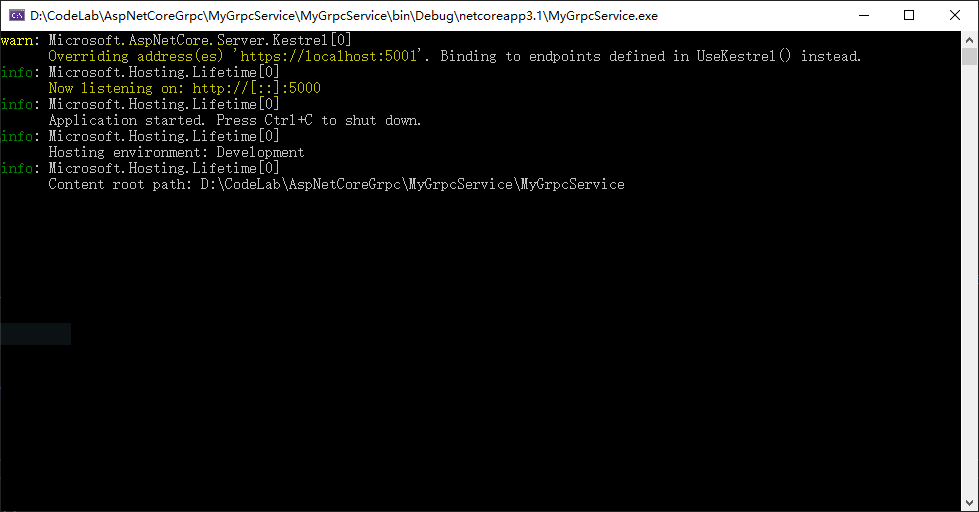

（四）配置AspNetCore gRPC使用HTTP
gRPC是基于HTTP2的，同时支持Http和Https协议。在开发环境，AspNetCore gRPC模板项目默认是使用TLS的，并通过开发证书来提供Https访问，这就是我们在（一）AspNetCore集成gRPC体验中遇到的，当第一次运行gRPC服务时，会看到一个提示安装和信任证书的确认框。
但是我们在实际使用中，gRPC更多的是使用在内网服务之间的通信，无疑Http协议比Https的效率要更高[1]。接下来我们就看下如何配置gRPC服务来实现Http访问。
¶服务端Kestrel配置
Kestrel服务器可以配置支持HTTP1.1和HTTP2，如果要实现没有TLS的HTTP2连接，那么Kestrel服务器的协议必须使用HTTP2[2]。具体配置代码如下：
1 | public static IHostBuilder CreateHostBuilder(string[] args) => |
增加如上配置代码后，再启动服务器后发现服务监听在地址http://[::]:5000了，同时日志输出的内容稍稍有点不同了。

¶客户端调用gRPC服务设置
服务端的Http协议配置好后，那客户端调用要怎么设置才能成功调用呢？其实客户端只要设置如下一个Http2UnencryptedSupport变量的值就可以了[3]。
1 | // This switch must be set before creating the GrpcChannel/HttpClient. |
注意：这个变量的设置必须在创建gRPC连接通道或者HttpClient客户端之前
¶.Net客户端
下面就是.Net客户端调用的设置，除了增加变量开关的设置，还需修改服务端的地址为Http。
1 | static void Main(string[] args) |
¶AspNetCore客户端
如果是AspNetCore客户端的话，则需要在Startup.cs文件里增加变量开关配置。
1 | public void ConfigureServices(IServiceCollection services) |
¶结语
到这里我们就把如何配置gRPC服务支持HTTP协议，以及客户端如何调用搞清楚了。但是客户端的调用之前要增加这么一个开关配置不是特别优雅，不过这点在 .Net 5里面已经得到了优化，不再需要单独的设置了。
¶源码
Demo代码已经上传 https://github.com/jeremyLJ/aspnetcore-grpc-demo/tree/grpc-without-tls